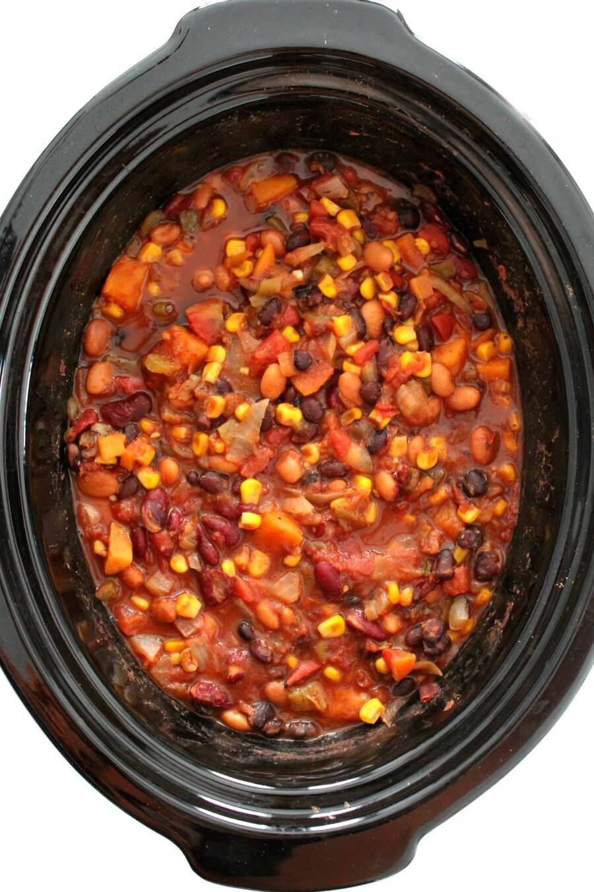

Vegan chili

Tasty vegan chili with beans and veggies!
This "meaty" vegetarian chili will become an instant faviorite among your friend and family.
It's perfect for cook-outs, parties, and it makes for an easy lunch or dinner.
With some delcious textured vegetable protein, no one will be able to tell that it's meat free
Ingredients
- 1 (32 oz) can of crushed tomatoes
- 2 (15 oz) cans of black beans
- 2 (15 oz) cans of red kidney beans
- 3 carrots
- 3 stalks of celery
- 1 cup textured vegetable protein (TVP)
Steps
- Rinse beans under cold water and add beans and chili to the crockpot.
- Chop carrots and celery into 1/2 inch pieces and add to crockpot.
- Add spices and cook in crockpot on low for 8 hours